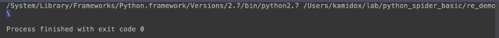
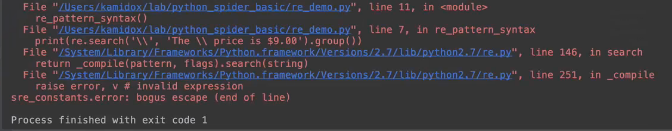
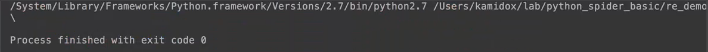

r表示我的这个正则表达式里面的字符串，在Python里面不再进行转义处理了。
举例：
# -*- coding: utf-8 -*-
import re
def re_pattern_syntax():
# 转义字符 \ 用来匹配特殊字符
print(re.search(r'\\', 'The\\ price is $9.00').groups()) //匹配\
if __name__ == '__main__':
re_pattern_syntax()
运行结果

假如把 r去掉呢？
# -*- coding: utf-8 -*-
import re
def re_pattern_syntax():
# 转义字符 \ 用来匹配特殊字符
print(re.search('\\', 'The\\ price is $9.00').groups()) //匹配\
if __name__ == '__main__':
re_pattern_syntax()
运行结果，会报错。

假如把 r去掉，要去匹配\呢？
# -*- coding: utf-8 -*-
import re
def re_pattern_syntax():
# 转义字符 \ 用来匹配特殊字符
print(re.search('\\\\', 'The\\ price is $9.00').groups()) //匹配\
if __name__ == '__main__':
re_pattern_syntax()
运行结果，为什么要写4个呢？因为前2个会被Python给处理掉，后面2个\\又被处理成一个\，所以最后真正处理完只有2个\，所以必须写4个\，才能匹配出1个\，这样可读性是比较差的，所以这也是我们为什么要在正则表达式里面加个r，是为了避免这个Python语言去处理这个\。

【本文由麦子学院独家原创，转载请注明出处并保留原文链接】